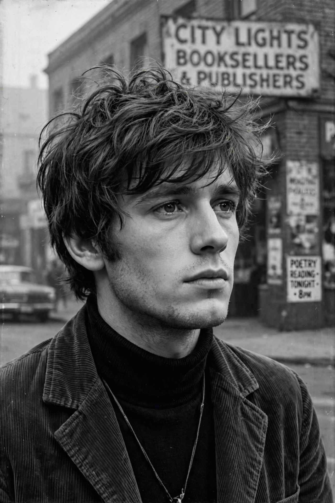

Peter Orlovsky
| Peter Orlovsky | |
|---|---|
 | |
| Born | July 8, 1933 New York City, U.S. |
| Died | May 30, 2010 (aged 76) Williston, Vermont, U.S. |
| Occupation | Poet, actor |
| Partner | Allen Ginsberg (1954–1997) |
Peter Anton Orlovsky (July 8, 1933 – May 30, 2010) was an American poet and actor, and the lifelong partner of Allen Ginsberg. The son of a Russian émigré family on New York's Lower East Side, he met Ginsberg in San Francisco in 1954 and remained his companion until Ginsberg's death in 1997 — a relationship central to the domestic life of the Beat Generation.
Life
Orlovsky worked as an orderly and briefly studied at Columbia before the relationship with Ginsberg began. He travelled with Ginsberg through Morocco, Europe and India (1961–63) and appeared in Robert Frank and Alfred Leslie's film Pull My Daisy (1959) and in Andy Warhol's Couch (1964). From 1974 he taught at the Jack Kerouac School of Disembodied Poetics in Boulder, where his course was famously listed as "Cleaning as Meditation".
Poetry
His poems, written in an unguarded, spontaneous idiom, appeared in Dear Allen, Ship Will Land Jan 23, 58 (1971) and Clean Asshole Poems & Smiling Vegetable Songs (1978). Gregory Corso championed his work, calling him a natural "pure" voice. In later years Orlovsky lived on a farm in Vermont, struggling with addiction and ill health; he died of lung cancer in 2010.